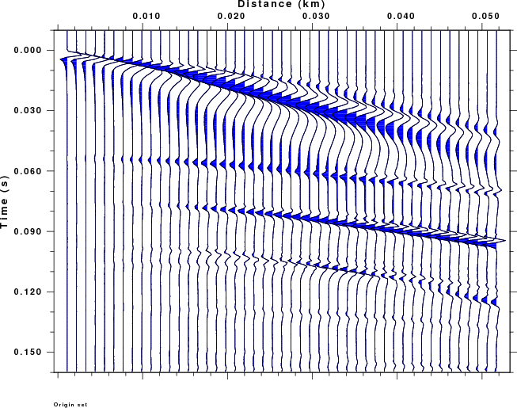

Introduction
The following Email was received from Shan Dou on July 5, 2012:
Hi Prof. Herrmann,
I have a couple of questions about spulse96.
(1) For user-specified source time function (specified with
the "-F" option), what type of file format should I use? A
two-column ascii, a file96 format ascii, or a sac file?
(2) I did a simple set of test with a two layer + half space
model, and the output seismograms are compared against
finite difference calculation results. I attached a PDF file
in this email to show a couple of differences that can be
seen in the results. I marked my questions in blue color,
would you please take a look at them? It would be great if I
can get some suggestions from you about those questions!
Thank you very much!
Best Wishes,
Shan
*******************************************************************
Response
(1) The format for the "-F rfile"
option to spulse96 and hpulse96 is found in the
respective source code, e.g., PROGRAMS.330/VOLIII/src/spulse96.f
and PROGRAMS.330/VOLVI/src/hpulse96.f in subroutine pulud. The data
format in the spulse96.f has the following code:
read(4,*)np,dtt
read(4,*)(d(i),i=1,np)
I have just modified the hspec96.f to use the same list directed
IO input. This will be available in
hpulse96 with the next update.
(2) The PDF document concerning this question is
CPS_E3D_syntheticSeismograms_Comparison-2.pdf .
To respond to the many questions I created a velocity model file
and created synthetics using both modal superposition and the
wavenumebr integration techniques.
The scripts to run both the wavenumber integration and modal
superposition is given in
t.tgz.
Unpack and run using the commands:
gunzip -c t.tgz DOALL
Assuming that you have ImageMagick installed on your computer, you
will then file the image files Shandou1/WK.png and
ShanDou2/SW.png, which are compared in the next figure (note that
each traces is scaled differently and that this is not a true
amplitude plot):
Wavenumber Integration - WK.png
 |
Modal Superposition -SW.png |
Note that the graphics is performed
using gsac. Note also that this is slightly different from the
CPS-E3D...pdf in that the sample interval is 6.25E-05 instead of
6.20E-05
Before answering the questions in the PDF, I note that Shan Dou
actually made synthetics with a source time function with a
duration of 4*40*6.20E-05 sec (0.0992 sec). The small sample
interval requires a lot of computation time. To test the program
results, I used the "-NDEC 16" flag on hprep96 to effectively change the sample interval
to 0.001 sec, and to make the computations a factor fo 256
faster. To accomplish the same with the surface-wave codes,
I change the sample interval to 0.001 sec and decreased the number
of data points a factor of 16 to 512.
I also begtan the synthetic -0.01 sec before the origin time and I
also did not make a synthetic at zero distance, since this is very
unstable numerically.
Several questions were asked in the PDF:
a. The high frequency “glitches” that are superimposed on the
longer period signal: (Q1:
What
causes these series of
glitches?)
When adding modes, you must
be very careful that the dispersion curves are correctly
followed and that there is no mode jumping. "This will be a big
problem for low-velocity layers.
Your text indicated the use of the "-LOCK" flag in spulse96. Did
you modify the lower part of the model to actually make locked
modes.
Adding mode will only provide arrival with phase velocities less
than the highest S-wave velocity in the model. If you did not
add a high velocity layer at depth, you model will only provide
arrivals with phase velocities less than 2800 m/a, which means
that near vertical reflections will not be modeled correctly.
b. The very long period signal that are present before the
first-P arrivals, which make the time
series appear to be acausa; (Q2: What are the causes of these arrivals? Could
inadequate
amount of summed modes be
the lead cause?)
When adding modes, you will
nefver get the complete synthetic because you are actually
phase-velocity filtering everything in an acausal manner. By
make in the synthetics start before the origin time, and by NOT
using a acausal Ricker wavelet, you can see the P-arrival in the
WK synthetics.
If you want to use a Ricker wavelet, then in gsac apply the
commands dif, mul -1, and then ricker f 80, which will provide
something similar to your E3D synthetics
c. Long period signals are also quite strong in later
portion of the synthetic seismograms. Would
this be caused by inadequate amount of summed modes as well?
I do not see this
problem. However in your E3D synthetics there is a strange
bifurcation (splitting) starting at time 0.12 sec at trace
number 40. It is not that extreme in the WK.png
synthetic.
Final comment
There will always be a problem with the suface wave modal
superposition because I assume that velocity increases with depth.
This means that the eigenfunctions corresponding to the evanescent
waves decrease with depth. For a model with a low velocity
zone, there will be cases of low pahse velocity in which the
eigenfunctions oscillate in the low velocity region but must
exponentially decay in both directions away from this zone. In you
problem this would require an exponential decay toward the surface,
whereas I actually will compute an expoential increase toward the
surface. This problem is worse at higher freuqnecies, or as the
thickness of the top layer increases. Beware!!
See Also
Synthetics for
seismic exploration